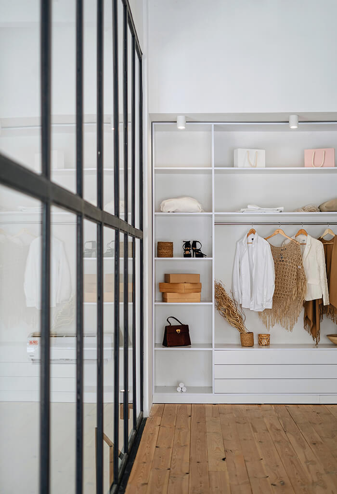
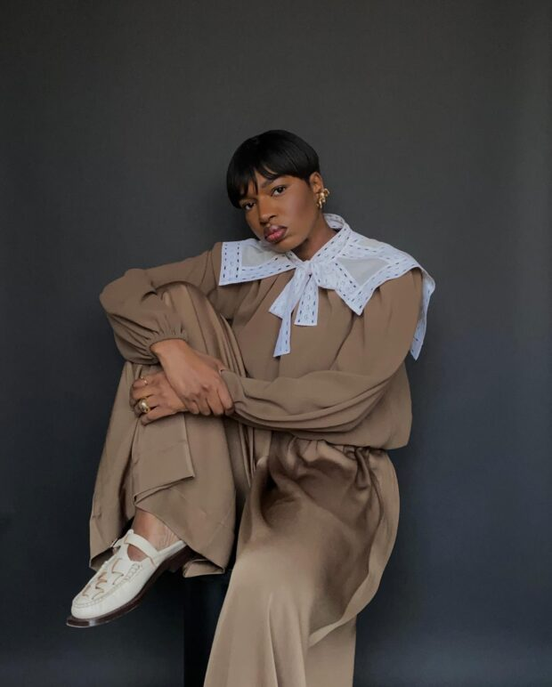

Tendência 2025: Estilo Boho Chic
O estilo boho está de volta com tudo! Tecidos leves, estampas étnicas e acessórios artesanais marcam presença nas passarelas.
Leia maisFique por dentro das últimas tendências, dicas e inspirações do mundo da moda!
O estilo boho está de volta com tudo! Tecidos leves, estampas étnicas e acessórios artesanais marcam presença nas passarelas.
Leia mais
Descubra como ter menos peças, mas com mais possibilidades! Veja como montar looks versáteis e funcionais.
Leia mais
Do rosa suave ao Mocha Mousse, as cores que vão dominar o próximo ano estão cheias de atitude e delicadeza.
Leia mais